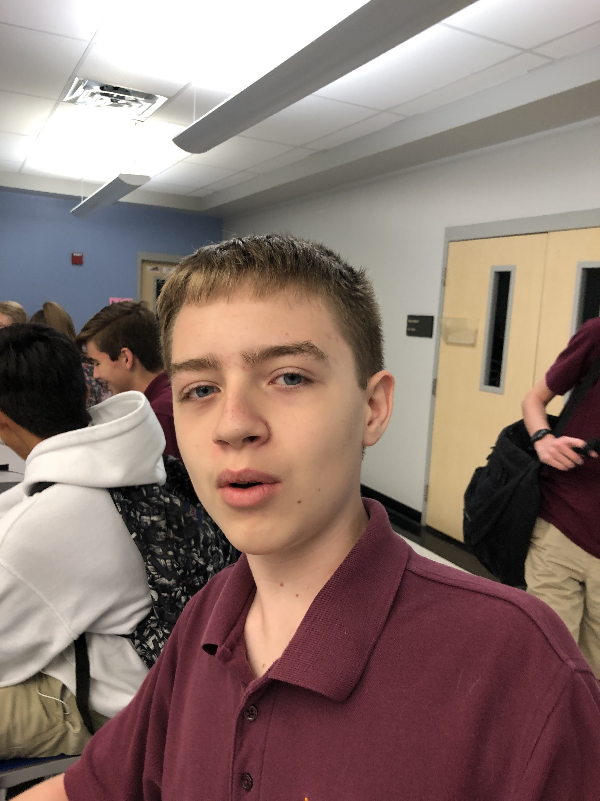
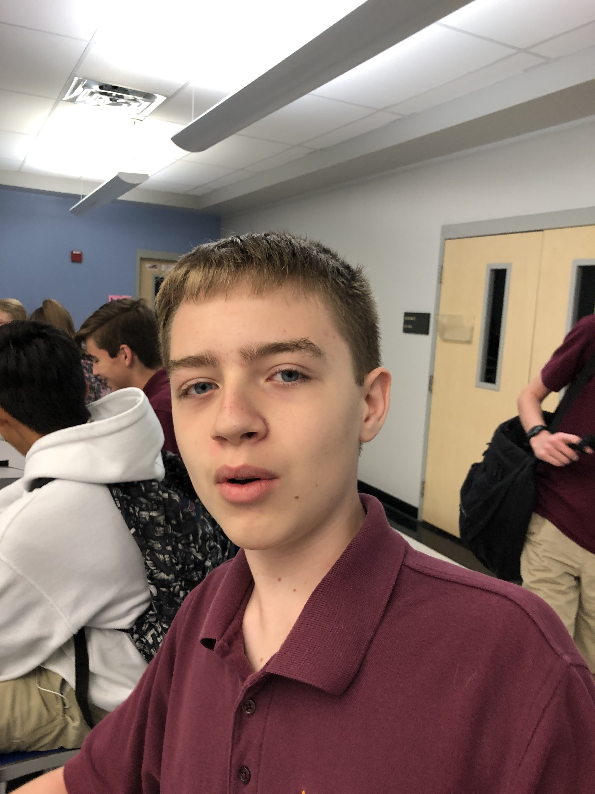

ABOUT NEWS SHOP
About Us
Who are the Bartch Trees?
- WE ARE JUST A GROUP OF FRIENDS MAKING MUSIC.

 

Bartch Trees is an experimental Synth Pop Indie Band from Seattle, Washington. The band formed in 2013, when they released their first project, One Hundred Ant Army, under their independent label “Dream Greater.”
In 2015, Bartch Trees joined Domino Records and released their debut album, Pyramids on May 5th. Meg and Jack fell in love and were married in 2016, which inspired many love songs from the band. In June 2018, Bartch Trees released their sophomore album, Pretty Nine. This album saw a large shift in the band’s style sonically and visually.